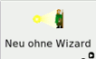
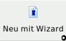
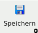
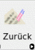
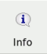
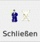
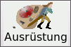
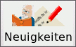

|
|
|
|
| |
MAGUS verfügt über die folgenden Oberflächenelemente:
|
|
| |
Zum Seitenanfang |
|
| |
Menüleiste

Über die Pulldown-Menüs lassen sich verschiedene Programmfunktionen steuern:
- Datei:
- Neuer Abenteurer:
MAGUS wird zurückgesetzt und es kann ein neuer Abenteurer generiert werden.
- Neuer Abenteurer mit Wizard:
MAGUS wird zurückgesetzt und der Wizard wird gestartet, mit dessen Unterstützung ein neur Grad 1
Abenteurer erschaffen werden kann.
- Wizard beenden:
Der Wizard wird abgeschaltet (auch während der Generierung eines Abenteurers möglich).
- Öffnen:
Laden eines existierenden Abenteurers:
- Speichern:
Speichern eines existierenden Abenteurers
- Speichern unter:
Speichert einen Abenteurer in ein wählbares Verzeichnis unter einem frei wählbaren Namen (Default:
[Abenteurername].magus)
- Exportieren:
Exportiert die aktuelle Figur als Textdatei (.txt) im offiziellen Abenteuer-Format
- Drucken:
Erstellt die Dokumente im PDF-Format (Dieses Menü ist auch über die rechte Maustaste zugänglich)
- Abenteurerdokument:
Erstellt das "Hauptdokument" mit allen wichtigen Werten und Fertigkeiten
- Ausrüstungsdokument:
- Nur sichtbares:
Es wird ein Dokument erstellt, welches nur die für dritte sichtbare Ausrüstung zeigt
- Alles drucken:
Es wird ein Dokument mit allen Ausrüstungsteilen erstellt.
- Beschreibung:
Das Dokument mit der Abenteurerbeschreibung wird erstellt
- Alles drucken:
Alle obigen Dokumente werden erstellt.
- Leeres Abenteurerblatt:
Es wird ein leeres "Hauptdokument" erzeugt.
- Spielleiterbogen:
Es wird ein Spielleiterbogen erstellt, welcher wichtige Spielwerte und Fertigkeiten aller
in MAGUS geöffneten Figuren enthält.
- Beenden:
Beendet MAGUS mit Nachfrage bei ungesicherten Abenteurern
- Ferner werden hier die zuletzt bearbeiteten Figuren angezeigt (bis zu 10)
Bearbeiten:
- Rückgängig:
Letzten Schritt rückgängig machen
- Erneut/Vorwärts:
Rückgängig gemachten Schritt wiederholen
- Geschichte:
Wechsel auf die Notebookseite "News & Geschichte"
Hilfe:
- Anleitung:
Öffnet diese Hilfe
- Hilfe:
Öffnet ein Fenster mit einer Kurz-Hilfe
- Info & Credits:
Wechsel auf die Notebookseite "Info & Credits"
- News:
Wechsel auf die Notebookseite "News & Geschichte"
Ansicht & Fenster:
- Optionen:
Wechsel auf die Notebookseite "Optionen"
- Ansicht & Fenster:
- Info Fenster zeigen:
Öffnet das Info-Fenster
- Lernschema/Steigern auswählbar machen:
Hiermit werden die Funktionen auf den Notebookseiten "Lernschema" und "Steigern"
aktiviert.
- Gestaltung:
Ermöglicht das Anpassen des Erscheinungsbildes vom MAGUS (siehe: Optionen)
Regionen:
Hier können Regionen und Regelerweiterweiterungen gewählt werden (siehe: Optionen)
|
|
| |
Zum Seitenanfang |
|
| |
Ständige Buttonleiste
Über die ständige Buttonleiste sind einige wichtige Funktionen von MAGUS zugänglich, die von jeder Stelle
im Programm aus genutzt werden können.

MAGUS-Style
|
Über die Optionen läßt sich das Aussehen von MAGUS verändern. Die Buttonleiste existiert zwei Varianten:
In der MAGUS-Style Variante, und dem WindowsXP nachempfunden Win32-Style |

Win32-Style
|
|  |
Neu:
Neuer Abenteurer: MAGUS wird zurückgesetzt und es kann ein neuer Abenteurer generiert werden. |
 |
 |
Öffnen:
Laden eines existierenden Abenteurers |
 |
 |
Speichern:
linke Maustaste: Speichern eines Abenteurers
rechte Maustaste: Speichern unter |
 |
| |
Drucken:
Es werden folgende PDF-Dokumente erzeugt:
linke Maustaste: Das Abenteurer Dokument wird erzeugt.
mittlere Maustaste: Ein Dokument mit der Abenteurerbeschreibung wird erzeugt
rechte Maustaste: Das Ausrüstungsdokument wird erzeugt. |
 |
|  |
Zurück:
Letzten Schritt rückgängig machen |
|
 |
Vorwärts:
Rückgängig gemachten Schritt wiederholen |
 |
 |
Menü:
Es wird ein mit dem Menü der rechten Maustaste identisches Menü geöffnet. |
 |
| |
Info:
Wechsel auf die Notebookseite "Info & Credits" |
 |
 |
Hilfe:
Öffnet ein Fenster mit einer Kurz-Hilfe |
 |
 |
Anleitung:
Öffnet diese Hilfe |
 |
|  |
Schließen:
Beendet MAGUS mit Nachfrage bei ungesicherten Abenteurern |
|
|
|
| |
Zum Seitenanfang |
|
| |
Notebook-Seiten

Die Notebook-Seiten grenzen die verschiedenen Module von MAGUS untereinander ab.
MAGUS-Style |
Auch für die Notebook-Tabulatoren (oder auch -reiter) gibt es sowohl MAGUS-, als auch an WindowsXP angelehnte Icons. |
Win32-Style |
 |
Info & Credits:
Diese Notebookseite informiert u.a. über die Programmautoren und Copyright Vermerke. Werden ausschließlich
offizielle Regelergänzungen verwendet, so ist das Midgard-Logo sichtbar. |
|
 |
Grundwerte:
Auf dieser Seite werden die Grundeigenschaften und Grundlegenden Werte der Figuren ermittelt und verwaltet. |
|
| |
Lernschema:
Hier werden die alle Fertigkeiten und Eigenschaften bestimmt, die ein Abenteurer bei seiner Erschaffung besitzt |
 |
 |
Steigern:
Auf der Notebook-Seite "Steigern" findet das Steigern und die Verwaltung der Abenteurer statt. |
|
 |
Beschreibung:
Eine ausführliche Beschreibung des Abenteurers kann auf der Notebookseite "Beschreibung" erstellt werden. |
|
|  |
Ausrüstung:
Ein Abenteurer erhält seine Ausrüstung auf af dieser Notebookseite. |
|
 |
Optionen:
Auf der Seite "Optionen" können verschiedene Eigenschaften von MAGUS -wie das Erscheinungsbild und
verwendete Hilfsprogramme- verändert werden |
|
|  |
News & Geschichte:
Hier findet sich eine history der aktuellen MAGUS-Sitzung, sowie die Möglichkeit zwischen, unterschiedlichen
geöffneten Figuren zu wechseln. |
|
 |
Zufallsgenerator:
MAGUS bietet hier die Möglichkeit, (Nichtspieler-)Figuren schnell und regelkonform nach dem Zufallsprinzip zu
generieren und zu steigern. |
|
|
|
| |
Zum Seitenanfang |
|
| |
Statuszeile
In der Statuszeile werden verschiedene Informationen angezeigt. So werden die Anweisungen des Wizards ebenso in der Statuszeile
angezeigt, wie (in Form von Icons) die aktiven Regionen, sowie verschiedene MAGUS-Modi.
| |
Auch für die Statuszeile existieren eine MAGUS- und eine an WindowsXP angelehnte Version der Icons |
|
 |
Icon für den Nichtspielerfiguren-Modus |
|
 |
Icon für den aktiven Wizard |
 |
|
|
| |
Zum Seitenanfang |
|
| |
Maus-Menü
Es gibt zwei verschiedene Menüs, die über die rechte Maustaste zugänglich sind. Das Standard-Menü erhält man,
sobald man die rechte Maustaste über einer leeren Fläche betätigt. Ein zweites Menü existiert für Auswahlfenster.
Dieses erhält man, indem man die rechte Maustaste innerhalb eines Auswahlfensters betätigt
- Standard-Menü:
- Drucken:
- Abenteurer drucken (LaTeX):
Erstellt das "Hauptdokument" mit allen wichtigen Werten und Fertigkeiten
- Abenteurer Beschreibung drucken:
Das Dokument mit der Abenteurerbeschreibung wird erstellt
- Ausrüstungsdokument drucken (Alles):
Es wird ein Dokument mit allen Ausrüstungsteilen erstellt.
- Ausrüstungsdokument drucken (Nur sichtbare Gegenstände):
Es wird ein Dokument erstellt, welches nur die für dritte sichtbare Ausrüstung zeigt
- Leeres Abenteurerdokument drucken:
Es wird ein leeres "Hauptdokument" erzeugt.
- Regionen:
Hier können Regionen und Regelerweiterweiterungen gewählt werden (siehe: Optionen)
- Ansicht & Fenster:
- Info Fenster zeigen:
Öffnet das Info-Fenster
- Lernschema/Steigern auswählbar machen:
Hiermit werden die Funktionen auf den Notebookseiten "Lernschema" und "Steigern"
aktiviert.
- Auswahlfenster-Menü
Mit diesem Menü läßt sich das Erscheinungsbild des jeweiligen Auswahlfensters beeinflussen:
- Zurücksetzen
Die Standardeinstellungen des Auswahlfensters werden wiederhergestellt,
- Abbrechen
Menü wird geschlossen
- Sichtbare Spalten
Es wird ein Untermenü geöffent, in dem (abhängig vom jeweilige Auswahlfenster) einzelne Spalten an- oder
abgewählt werden können.
- Optionen
Hier können, abhängig vom Auswahlfenster verschiedene Optionen aktiviert oder deaktiviert werden werden
- Spaltenüberschriften anzeigen:
Anzeige der Spaltenüberschriften Ein/Aus (Standard: Ein)
- Standardreihenfolge:
Mit Standardreihenfolge auffüllen
- gewählte Knoten expandieren:
Ausklappen zusammengefasster Listen
- farblich markieren:
???
- Alle Knoten expandieren:
Ausklappen aller zusammengefasster Listen
- Alle Knoten kollabieren:
Einklappen zusammengefasster Listen
|
|
| |
Zum Seitenanfang |
|